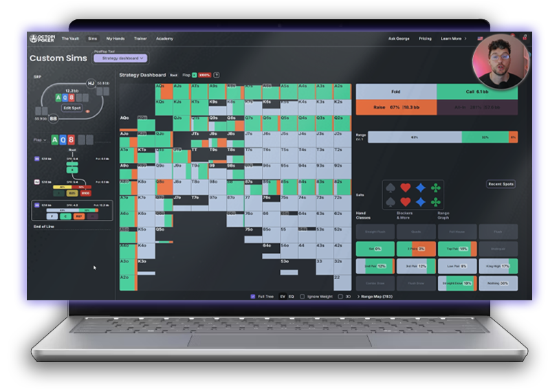
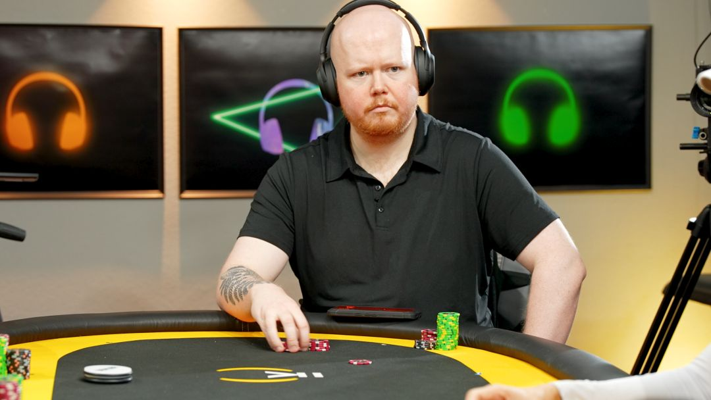

A 3-Week Intensive Course from Octopi Poker
15 Blueprints to Exploit Common Population Mistakes
15 high-leverage tournament topics covered over 3 weeks. You'll learn GTO foundations, node-locking, and exploitative frameworks that you can apply in your games.
If I had 15 sessions to improvea tournament player’s game as fast as possible, this is exactly what I would teach.— Thomas Boivin

Beyond The Solver breaks down the 15 highest-leverage areas of focus in tournament poker, taught through video sessions that combine clear instruction from Thomas with integrated quizzes and hands-on drills that turn concepts into reps you can apply at the table. You get lifetime access to every session, so the course keeps paying off long after the three weeks are over.
The course is hosted on Octopi Academy — our learning platform where all of our structured content lives in one place. Some of it is free, some of it is paid, and you'll find courses from Thomas, Matt Hunt, and other Octopi coaches alongside the drills and quizzes that make each lesson stick.
Study, practice, and coaching in one program
Three weeks, four milestones
Week 1
May 4th – 10th
Sessions 1–5. Preflop foundations and early postflop play.
Week 2
May 11th – 17th
Sessions 6–10. SRP depth, 3-bet pots, and blind vs. blind postflop.
Week 3
May 18th – 24th
Sessions 11–15. Turn play, multiway, ICM postflop, and WSOP prep.
Catch-up
May 25th – June 1st
Catch-up week and closing event.
GTO, node-locking, and exploitation
Week 1 — Preflop and Early Postflop
Thomas walks through the course structure, what to expect from each week, and how to get the most out of the curriculum. Sets the framework for everything that follows.
RFI construction from every position and how to respond when facing opens. GTO baselines first, then recommended exploitations for the tendencies you’ll actually see in live fields — who folds too much, who calls too wide, and how to size accordingly.
What to do when you get 3-bet and see a flop. Navigating postflop play as the caller in 3-bet pots — when to continue, when to fold, and how to exploit opponents who c-bet too frequently or give up too easily on later streets.
How ICM pressure reshapes preflop strategy at final tables and on the bubble. Risk premium adjustments, when to tighten, when to apply pressure, and where most players miscalculate the value of survival vs. chip accumulation.
Postflop play in single-raised pots when early and middle positions open against the big blind. Betting and checking frequencies, sizing across board textures, and the population-level deviations that create the most profitable adjustments.
The most common postflop dynamic in tournament poker. How button vs. big blind play differs from earlier positions — simplified textures, GTO c-bet baselines, and where to find the biggest exploitative edges in live fields.
Week 2 — Postflop Depth
SRP play from both sides of the small blind — as the opener and as the defender. How the small blind’s positional disadvantage changes correct strategy, and where population tendencies create the largest gaps to exploit.
Postflop play in single-raised pots between non-blind positions. How strategy shifts when both players have positional awareness, and the equilibrium and exploitation frameworks for these less-studied but high-frequency spots.
Navigating 3-bet pots between non-blind positions. Construction, sizing, and postflop play when stacks are deeper and positional dynamics are cleaner — plus the exploitative adjustments for players who fold too much or call too wide to 3-bets.
3-bet pot dynamics when the small blind is the aggressor against an in-position caller. How being out of position as the 3-bettor changes postflop strategy, and where the biggest population mistakes create exploitable edges.
Postflop play in blind vs. blind pots — one of the most frequently misplayed dynamics in tournament poker. Postflop lines in and out of position, and how to exploit the specific tendencies players show when the action folds to the blinds.
Week 3 — Advanced and Tournament Edge
Multi-street aggression: when to fire second and third barrels, how to construct bluffing ranges on later streets, and the population-level tendencies around turn and river fold frequencies that make this one of the most profitable areas to study.
How strategy shifts in 3+ player pots — tighter ranges, less bluffing, changed sizing. Advanced heuristics for multiway scenarios and how to exploit the biggest population mistakes without overextending.
How ICM pressure changes postflop play in single-raised pots when in position against the big blind. The adjustments to betting frequency, sizing, and aggression when pay jumps and survival equity reshape every decision.
Preflop strategy when the action folds to the blinds. Open-raising, 3-betting, and defending ranges in BvB spots — where most players leave the most equity on the table and how to exploit their tendencies preflop.
Everything outside the felt that affects your results — bankroll management, game selection, mental game, travel logistics, and how to prepare for a major live series. The practical side of turning study into sustained tournament success.
Three proven players, one curriculum
Designed every topic, teaching sequence, and exploitation framework in this course.
Contributing Coaches
Contributes sessions on topics where his experience runs deepest.

Contributes sessions drawn from years of hands-on coaching work.
Course runs from May 4th – June 1st.
Registration opens April 21st.
Beyond the Solver
15 Blueprints to Exploit Common Population Mistakes
15 Blueprints to Exploit Common Population Mistakes
15 topics. 3 weeks. Bridge the gap between studying and winning.
Course runs from May 4th – June 1st · Registration opens April 21st
Get Started